From the history of mankind, women's beauty captivated hearts, inspiring poets and sparking passions. However, amidst the admiration, it is a poignant reminder that female beauty influencers have also entwining tales of love and glamour. Today, we welcome a new era. As in this ever-changing world, beauty standards develop, but the desire to feel good about yourself remains constant, isn't it? Beautification becomes the perfect companion on your journey to achieving that.
As commonthreadco predicts, the beauty industry is projected to reach a staggering valuation of 716 billion by 2025. And guess what? Budget constraints are no longer a hurdle, thanks to the rise of the best beauty influencers on instagram who generously share their knowledge, tips, tricks, and mistakes to avoid in a simplified manner. With the collaboration of influencers, you can enhance your appearance and be your best self.
But, Who exactly are Beauty Instagrammers?
Beauty Instagrammers or influencers are the content instagrammers who create content about beauty products and services – make ups, skin care, haircare, beauty tips, make up tutorials etc.
The authenticity and valuable insights provided top Indian beauty Instagrammers have garnered immense trust, especially among the youth. According to thinkwithgoogle, over 70% of young individuals place more trust in influencers than traditional celebrities. It has led to a significant shift in the marketing landscape with a focus on video content creation. If you're a brand seeking to create impactful influencer-based videos for advertisements, social media, or product reviews, Vidzy, the best video production company, is your ultimate choice. With over 8+ years of experience, their team of video professionals excels in every aspect, from selecting the niche influencer to delivering creative videos and professional shoots, scriptwriting, monitoring, and more. So, now back to beauty influencers!
Instagram: a heaven for top beauty influencers, makeup artists, and limitless inspiration. These influencers leave behind a trail of unconventional makeup looks, beauty hacks, and cult beauty and skincare product reviews worth bookmarking. This digital world contains the key if you want to polish graphic eyeliners, reshape your lip line, or learn the secrets of faultless contouring. Join us as we delve into the world of formidable top beauty Instagram influencers in India who govern this magical area.
The List of Top Beauty Influencers in India on Instagram That You Should Follow in 2024
Contents
- 1. Mrunal Panchal
- 2. Parul Garg
- 3. Kritika Khurana Chhabra
- 4. Swati Verma
- 5. Anmol Bhatia
- 6. Fizza Abdi
- 7. Preeti Gera
- 8. Neha Menghwani
- 9. Shreya Jain
- 10. Sheena J Kaur
- 11. Fatimah Sayyed
-
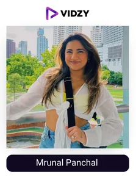
1. Mrunal Panchal
Instagram Profile: Mrunu
USP:
She is one of the top female instagrammers bagging awards like iconic female influencer of the year etc. for her amazing knowledge of the niche and even amazing way of presentation.
Makeup influencer Mrunal Panchal, also known as "mrunu," is from Gujarat, India. She is renowned for displaying her stunning appearances on Facebook, Instagram, YouTube, Snapchat, and TikTok. She started out on social media as a TikTok lip-synced but switched to Instagram after the former was banned in India.
Mrunal is also a travel enthusiast which helps her in experiencing, adapting, and then teaching the different beauty standards followed across the world. She frequently provides a glimpse of the makeup process in various contexts, such as photo shoots, movies, etc. Mrunal has a sizable 4.1 million followers on Instagram. Despite having a sizable audience, she has one of the highest engagement rates (3.75%) among her contemporaries. Her posts typically receive 154K likes and 750 comments, which equals a 240:1 ratio.
Along with a tone of makeup and beauty stuff, Mrunal also enjoys humour and occasionally publishes humorous things. One of the most watched reels of hers is also a funny one with her boyfriend reflecting 22.6 million different users watching the reel 29.3 million times, giving it 1.3 million likes and 3559 comments which. Mrunal also runs the "Gujju Unicorn" YouTube channel for trip vlogs, hair advice, seasonal skin care needs, and face care instructions, etc.
-
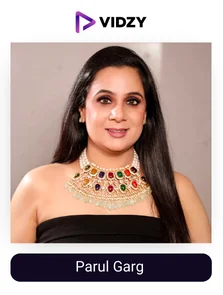
2. Parul Garg
Instagram Profile: Parul Garg
USP:
Parul is one of the most famous beauty influencers owing to her in-depth knowledge and experience helping her to provide the best services and content
Former lawyer turned makeup influencer Parul Garg hails from Gurgaon in New Delhi, India. She provides hair and cosmetics services across India and the world. Her services include makeovers, bridal, fashion, special events, and editorial makeup. Parul's skill to make her clients appear beautiful on their wedding day by concealing acne scars, patchy skin, dark circles, blemishes, and hyperpigmentation on their faces has won her praise from her customers. For each happy event, Parul creates unique beauty solutions based on her understanding of client demands.
Her work has been highlighted in prestigious media sites like Hindustan Times, Times of India, and Deccan Chronicles as one of the top beauty influencers in India. In addition, Bollywood celebrities including Karishma Kapoor, Malaika Arora, and Amisha Patel gave Parul awards as well. The doyen also runs an academy where she teaches classes in professional cosmetics, hairstyles, and self-grooming.
On Instagram, Parul has 2.3 million followers and a 1.9% interaction rate. She focuses a lot of her postings on Indian street fashion, bridal saris, makeup, photoshoots, and jewelry. For well-known Indian holidays like Diwali and Karva Chauth, Parul also displays several makeup and attire options. Netizens adore Parul's videos because the influencer consistently delivers engaging content. A happy couple getting married may be seen on the top reel of her Instagram account. The video received 117K likes, 283 comments, 2.7M plays, and 1.7M unique views.
As per shopify over 49% of brands are planning on focusing more on social commerce in 2024, if you want to cut through the intense competition and make it big with social commerce, collaborating with influencers like Parul with a creative campaign is the best idea which is easy to do with Vidzy as they handle the whole process for you!
-
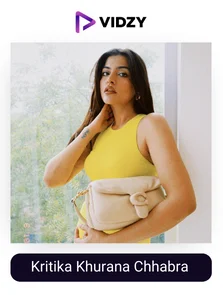
3. Kritika Khurana Chhabra
Instagram Profile: thatbohogirl
USP:
She will provide you with beauty tips and recommendations that are easy to follow and makes a great impact.
On certain days, after internalizing all the absurd beauty standards, we stand in front of the mirror and view ourselves through the lens of those same standards. Every element of our existence is negatively impacted as our sense of self declines.
Kritika Khurana, also known as the boho girl, experienced the same issue, but she made it a point to turn things around, which she did. Among the top Instagrammers or YouTubers, travel bloggers, and beauty influencers in India is Kritika Khurana. She is a well-known figure on the Internet because of her lifestyle or beauty and fashion blog, That Boho Girl.
With over 1.7 million followers on Instagram, the 27-year-old utilizes the platform to share pictures of her personal style, fashion trends, beauty advice, and travel experiences with her followers. Her Instagram account has an astounding 11% engagement rate, which just goes to show the kind of relationship she has been able to establish with her followers and how much they care about her.
The reels of one of the top Indian beauty influencers frequently appear in the trending area and easily receive over a million views. She consistently posts high-quality stuff that is better than the previous one, and it is never boring. As per crowdriff, over 86% of millennials agree that user-generated content makes a video by a brand look more superior in quality, however, if you club it with one of the top influencers like Kritika you can make the result extremely favorable on your side, which is now possible with companies like Vidzy.
-
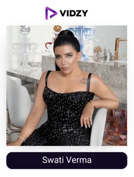
4. Swati Verma
Instagram Profile: Swati Verma
USP:
With over 7-8 years of experience, she has the ability to make you a pro in the beauty niche.
Global makeup influencer Swati Verma finished her education in London before returning to her native country to launch her own business. She has learned from some of the top professionals in the field. When it comes to eye makeup, Swati is unmatched. She has demonstrated her talent with famous clients, leaving behind complexions that are breathtaking. She aspires to be an inspiration for women all over the world and enjoys working with brides. For her clients' special days, Swati takes great pride in getting them ready. She instructs aspiring makeup artists in master classes throughout India.
Her students are given the opportunity to learn skills like draping, nail polish switching, hair styling, airbrush makeup, and guest makeup from one of India's top beauty influencers.
The engagement rate for Swati Verma's 1.2M loyal Instagram followers is 0.8%. She publishes articles about colour schemes, hairstyles, makeup tricks, and beauty hacks. She also maintains a blog where she informs her readers of the most recent developments in the beauty industry. Our analysis shows that Swati typically reaches 210.2K users per post. Her upcoming product launches are previewed in the doyen’s top reel. To date, the video has received 394.5K views, 34.3K likes, and 749 comments.
-
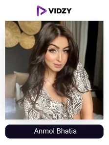
5. Anmol Bhatia
Instagram Profile: Anmol Bhatia
USP:
Her beauty tips and tutorials are all that you wished for when it comes to valuable information, presentation, etc.
For many women, wearing makeup boosts their confidence. It's likely that many of you don't frequently leave the house without wearing makeup. In fact, a lot of women don't want other people to see them until they've applied makeup.
While many women agree that wearing cosmetics boosts their confidence, many others think that wearing only the barest minimum of makeup is adequate. As a result, each woman has different needs when it comes to how much makeup is necessary to boost confidence.
To know how much would look good on you or how to apply it successfully, you must thoroughly understand it. Anmol may be the ideal person to assist you with that. Anmol Bhatia was a well-known Tik Tok user in India. She is now well-known alongside leading Indian beauty influencers who publish cosmetics tutorials, suggestions, and advice along with a variety of looks that you can be inspired by.
Her reels receive an incredible number of views, and she has a following of 1 million people and an engagement rate of 0.84%. You can find some incredibly useful information on the Instagram of one of the top beauty influencers.
-
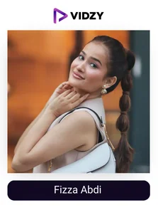
6. Fizza Abdi
Instagram Profile: Fizza Abdi
USP:
Her recommendations and styling techniques are something you won’t find anywhere else.
Fizza Abdi, an Indian makeup artist, is well-known for her work on videos featuring makeup, beauty products, makeovers, hairstyles, and eye makeup, among other topics. Fizza has been chosen over the years to represent prestigious fashion and lifestyle brands because of her bold appearance, sense of style, and personality. She has a devoted following on Instagram, Snapchat, TikTok, and YouTube thanks to her ability to motivate people to pursue their passions.
On Instagram, Fizza HD has 876K followers. She regularly posts new content for viewers and has a 1.5% engagement rate. Nail arts, makeovers, skin care regimens, and beauty tutorials are among the topics Fizza frequently posts about. She emphasizes the value of living a healthy life and is also passionate about fitness and works out frequently in her spare time and practices yoga.
Fizza Abdi is among the top beauty influencers in India, and her content can be seen by 241.5K Instagram users. Her posts received 85 comments and 12.9K likes on average (like-to-comment ratio stands at 153:1). When it comes to conveying a message to her audience, Reels does well. The profile receives an average of 73.7K views thanks to the medium.
The personal transformation makeup reel received 2.6M views, 101K comments, and 146 comments, making it a huge success. The doyen has 210K subscribers on YouTube and is active there as well.
-
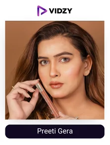
7. Preeti Gera
Instagram Profile: Preeti Gera
USP:
She is someone who can make you look glamorous with her simple to follow tips.
The best influencer to follow if you want to see what goes into creating those looks that can turn heads is Preeti Gera, without a doubt. She currently has 545K Instagram followers, and she is adding more each day. Her posts are full of gorgeous makeovers, which is a treat for her followers to see. We adore her because her methods for achieving those stunning looks are faultless and exceptional. She has some makeup tips that are so original that no one else could have come up with them. Make sure to check out her posts if you've always wanted to learn how to make gradient eyes and ombre lips.
Unbelievable is the way she changes her appearance. Your own beauty journey will be inspired by her makeovers, and you'll be encouraged to experiment with looks you never thought possible. She also runs an academy where she offers excellent courses at reasonable prices. Join her academy right away if makeup is your passion and becoming an artist is your dream.
For a wedding or other special occasion, you can quickly learn how to put together a super glam look, and then shock your loved ones with your remarkable transformation. Preeti is truly an artist in every sense, surpassing other Indian beauty influencers on Instagram.
-
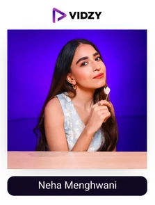
8. Neha Menghwani
Instagram Profile: Neha Menghwani
USP:
By collaborating with over 150 brands, She has proved to be a beauty influencer reflecting authority due to her genuine content and consistency.
Beauty, lifestyle, and travel content creator Neha Menghwani hails from Bombay, Maharashtra, India. She is well-known for her blog, "Stylessential," where she offers her opinions on lifestyle, travel, beauty, and fashion. Neha has the talent to give her clients opulent looks. She oversees many Bollywood superstars' appearances on the red carpet and on fashion runways, including Shahid Kapoor, Ranbir Kapoor, Saif Ali Khan, and Ranveer Singh. Neha was the winner of the Kerala-hosted "InfluencEx22 Makeup and Beauty influencer of the Year award." She serves as an example for many people who want to succeed in the beauty industry.
Neha is one of the leading Indian beauty influencers on various social media sites. She has shared vibrant images of outfits, nail art, and fashion accessories on Pinterest. She publishes reviews, how-to videos, and hair and beauty routines on YouTube as well. However, Neha prefers to interact with her audience on Instagram. The beauty influencer almost always posts new content. She receives an average of 33.4K views, 6.5K likes, and 22 comments, for an engagement rate of 1.5%. Instagram reels have proven to be a successful medium for Neha to communicate with her followers. Throwback clips from her trip to Kerala can be seen on her top reel. 417K people viewed the post, and it received 850 likes and 21 comments.
-
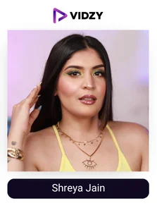
9. Shreya Jain
Instagram Profile: Shreya Jain
USP:
She is an extremely talented influencer who teaches you the best tricks and has her own beauty line for you to try and conquer.
Fashion stylist, blogger, and one of the top beauty influencers in India is Shreya Jain. She has always had exquisite taste in fashion and grooming. During Lakme Fashion Week and Amazon India Fashion Week, Shreya performed her styling magic. Additionally, she dressed models for editorial photo shoots for well-known fashion publications. On her blog, "beauty in the third world," Shreya shares her insightful observations.
With the upload of the video "DIY facial mask-fuller earth (2010)," Shyam made her YouTube debut. Since then, she has increased her influence on platforms like Facebook and Instagram.
The Indian Instagram beauty influencers boast 457K followers and a 2.0% engagement rate. Her posts receive 95 comments on average and 8.9K likes, giving her a reach of 151.2K. She uploads videos showcasing various makeup looks and gives her audience product reviews and recommendations. The top reel features Shreya's wedding attire: the post received a resounding 2.1M views, 68.9K likes, and 305 comments. The Influencer also discusses DIY projects, inexpensive products, chemical exfoliation, skincare routines and dupes, eye and hair styling, and budget-friendly products. Shreya frequently imitates the appearances of well-known Bollywood stars like Priyanka Chopra, Sonam Kapoor, Katrina Kaif, and Aishwarya Rai.
-
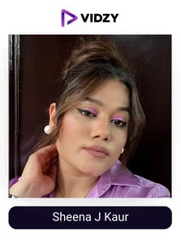
10. Sheena J Kaur
Instagram Profile: Sheena J Kaur
USP:
A makeup artist who can teach you how to look your best totally in your budget with her short easy to follow instruction posts.
Sheena J. Kaur is a celebrity makeup influencer from Jaipur and one of India's top beauty influencers. Since she began her job in 2016, she has grown a sizable community, gaining 255K Instagram followers and more than 13K YouTube subscribers. Her work reflects her passion for bringing out the best in everyone and enhancing their beauty. The incredible makeovers she has accomplished over the years are frequently featured in her Instagram posts. She also offers her advice so you can learn how to look your best while relaxing in the comfort of your own home.
Some of the trickiest makeup tricks, like how to get rid of dark circles while applying makeup and which method works better with orange corrector or dark concealer, have been thoroughly explained. According to Sheena, money cannot buy talent. You will need to practice daily if you want to master makeup. The best thing about her is that she takes pictures of herself on Instagram as she gets ready for a party or other event. The detailed posts explain how to prepare your skin before applying makeup and how to apply makeup to create a specific look.
-
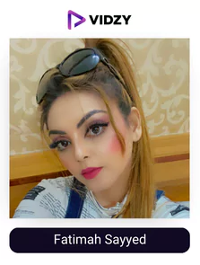
11. Fatimah Sayyed
Instagram Profile: Fatimah Sayyed
USP:
With great experience and knowledge, she is the ideal influencer to follow if you are inclined towards beautification.
Professional hair and makeup influencer Fatimah Sayyed lives in Mumbai, India. She is a makeup pro with the ability to design distinctive looks for any festival or event. One of India's top beauty influencers is also a teacher who conducts workshops all over the nation. Fatimah has worked with numerous industry participants and has received positive feedback on her efforts.
On Instagram, Fatimah Sayyed has 410K followers and a 1.60% engagement rate. Her nearly 2300 posts have received, on average, 3.5K likes and 48 comments, for a like-to-comment ratio of 74 to 1. During her masterclass, Fatima displays the makeup work that her students created. When she demonstrates how to style the eyes, face, hair, and lips, she posts Dictionary Secrets videos on Instagram and YouTube.
She has more images than moving pictures. Videos typically receive 47.7K views, compared to 37.9K for reels. A bride getting ready for her big day is featured in one of Fatimah's reels. 334K people viewed the post, and 16K people liked it. She has additional incredible content in the same vein.
-
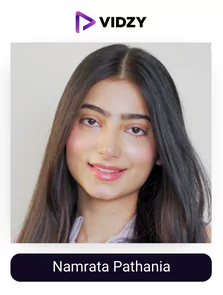
12. Namrata Pathania
Instagram Profile: Namrata Pathania
USP:
Being consistent with quality content, Namrata has been able to bring great authority to her name.
Namrata Pathania, an Instagram model, and content creator, is a well-known fashion, fitness, and beauty influencer in India. Her stunning appearance, adorable glow, sense of style, and personality are well-known. She has served as the spokesperson for several well-known companies. She has a sizable fan base in India and is a well-known Instagram user. She posts photos, recommendations for beauty products, and advice on Instagram in addition to showcasing her fashionable attire. She takes pleasure in beauty-related pursuits as well as modelling, acting, etc.
She has a special passion for the topic of beauty. Namrata Pathania has collaborated with a variety of reputable and well-known companies. Her fans and followers adore her as one of the top Instagram beauty influencers because of the original and insightful content she creates. With over 367K followers and a strong engagement rate on Instagram, Namrata Pathania can attract millions of views for some of her videos. For instance, her video recommending hairstyles attracted over 3.3 million views.
Visit the account of one of the finest beauty influencers in India account right away if you have an interest in fashion or beauty; she can really add value to it.
-
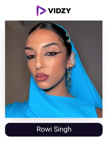
13. Rowi Singh
Instagram Profile: Rowi Singh
USP:
Rowi has been seen in collaboration with international brands and on the cover of vogue as her way of sharing knowledge and talent is something that is never seen before.
Rowi Singh is an Indian-born Australian beauty influencer who currently resides in Sydney. She dedicates her life to empowering and inspiring those who want to work in the field. Rowi Singh had a 50-shade palette when she was in need, which allowed her to realize her colour fantasies. Instead of working on others, Rowi uses her body as a canvas for her artwork. Her abilities are a fusion of ideas, colors, and cultures.
On Instagram, Rowi Singh has 397K followers and a 2.1% engagement rate. On her Instagram feed, there are more pictures than videos. Rowi is one of the best makeup influencers in India and has a unique style. She uploads photos in which she tinkers with various colour schemes to produce dreamy eyes. Her talents are visible in the reel, which has 299K views, 33.9K likes, and 133 comments. The beauty influencer receives 52 comments, 38.3K views, and an average of 8.1K likes per post. From a single post, she can reach at least 113.5K Instagram users.
-
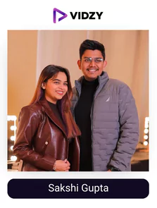
14. Sakshi Gupta
Instagram Profile: Sakshi Gupta Makeup Studio
USP:
With a lot of practical experience, she shares the best tips and tricks as well as the mistakes to avoid.
One of the leading makeup influencers in India, Sakshi Gupta is renowned for offering top-notch services to help her clients shine during important celebrations. To create appropriate looks, the professionals consider the celebration's theme. Sakshi offers everything in one place. She is a pro at airbrush makeup, airbrush pedicures, draping, false lash extensions, HD makeup, party makeup, engagement makeup, and manicures. Sakshi also owns the Academy makeup studio. She and her companions give all the information about makeup items and how to apply them to the skin.
Sakshi has 286K Instagram followers and a 1.8% engagement rate. For flawless results, she simultaneously works on the face, lips, hair, and eyes. She explains the procedure in videos that she posts to her Instagram account. Her content reaches thousands of people all over India and is among the best beauty influences there. She typically receives 3K likes and 51 comments per post, giving her a ratio of 45 to 1. Reels are Sakshi's preferred form of media. Views, likes, and comments on the top reel of Sakshi demonstrating a look from her Nagpur master class totaled 221K.
-
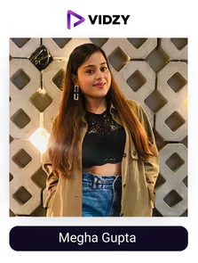
15. Megha Gupta
Instagram Profile: Meghaa Gupta
USP:
She will make learning about beauty interesting for you.
Are beauty doyens performing at their best? That seems to be the situation. More than any other type of social media influencer, beauty influencers in India have achieved success thanks to lucrative contracts and promotional agreements with cosmetic companies. Some cosmetic companies, like MAC, have even worked with influencers to develop completely new makeup collections. One such outstanding beauty influencer is Megha Gupta.
She responded, "Since I was a child, I've had a strong interest in cosmetics when asked what motivates her to be a beauty influencer. Over the years, she has read all about beauty and applied makeup on her own. When she first started writing blogs for well-known Indian blogs, she quickly realized that she could also write blogs for other people using her own name. She made the decision to focus solely on beauty at that time, and later expanded her horizon by getting onto Instagram as well with her valuable tips and tricks which she has learned over the years in the most fun and creative way.
The Instagram makeup influencer currently has 269k followers and a 3.92% engagement rate, proving that she has accomplished everything she set out to do with her account. Because of the incredible quality and consistency of her content, her reels frequently surpass the 100k mark. This is the account to follow if you want the best beauty product suggestions and styling inspiration.
-
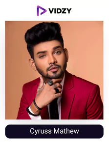
16. Cyruss Mathew
Instagram Profile: Cyruss Mathew
USP:
He has received multiple awards like millennium brilliance award etc. owing to the unique beauty content he comes up with which helps his audience to a major level.
Professional makeup and hair stylist Cyruss Mathew hails from Delhi's NCR. He was very young when he first became passionate about the field. Cyruss is currently the nation's leading expert on bridal makeup, hair cutting, colour treatment, massage, styling, therapy, skin treatment, pedicures, facials, manicures, etc. after accumulating over 19 years of experience. One of the top beauty influencers in India is Cyruss. He oversees a group of professionals who determine the best hairstyles and skin care regimens for clients based on factors like face shape, skin type, features, product suitability, etc. Cyruss and his coworkers have access to a variety of well-known domestic and foreign brands, including Sigma Makeup Tools, Blue Eyes Cosmetics, Adam Cosmetics, and Lily's Cosmetics, to name a few.
Instagram user Cyrus Mathew frequently posts images of stunning brides getting ready for their big day. Reels are also used by one of the top beauty influencers in India to display the before and after results of his work. Cyruss receives 14.9K views, 274 likes, and 13 comments on each upload on average. His engagement rate is 0.2%, and his average reach is 18.9K users. A walkthrough of significant moments from one of Cyruss' workshops can be found on the feed's top reel. There were 132K views, 2231 likes, and 107 comments on the video.
-
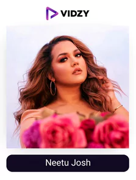
17. Neetu Josh
Instagram Profile: Neetu Joshi
USP:
Take your beautification up a notch by seeing quality content posted by Neetu as she is simple in her approach to teach.
Neetu Josh is one of the top beauty Instagrammers with 229K followers, and her number is growing daily. She is a talented makeup artist who can astound her audience with her cutting-edge transformation abilities. She divulges a tone of insider tips and tricks used by pro makeup artists. Her instruction style is also easy enough for women who are unfamiliar with the distinction between eyeliner and mascara to understand. Neetu is the ideal artist to follow if you've always wanted to learn the right methods for applying foundation that doesn't look patchy or cakey.
Even if you are an expert makeup user, there are still many professional hacks that you may not be aware of. Beautiful photos of her makeovers that have received thousands of likes on Instagram are abundant in her posts. Neetu is the only artist who can give you the ideal glam if you want smokey blue eyes and a sleek bridal bun for your big day! She and her group also offer online courses that impart expert beauty advice and techniques for recreating their distinctive looks. As a result, you can now make sultry green eyes and vintage Hollywood waves in the comfort of your own home. Isn't that incredible?
-
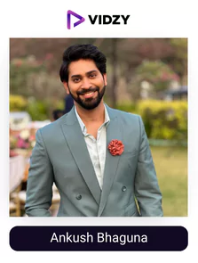
18. Ankush Bhaguna
Instagram Profile: wingitwithankush
USP:
Breaking stereotypes and providing great beauty related content is what defines this influencer.
The names mermaid, unicorn, and constellation do not refer to characters when it comes to this account. These different eye makeup looks were developed by actor and content creator Ankush Bahuguna. In November, he started the Wing It with Ankush Instagram makeup account. There are more than just hacks and red lips on display. You'll be transported to Disneyland for makeup lovers thanks to Bahuguna's mastery of shimmering eyeshadows and vibrant eyeliners.
He records himself doing his mother's, siblings', and friends' makeup and posts the videos on social media. Additionally, Bahuguna provides brief tutorials in which he describes how he covers his dark circles or shapes his nose. By working with a variety of faces in this way, Indian makeup influencers create looks that are free of the usual constraints of seasonal trends or bridal makeup.
Simply put, Wing It With Ankush is a passion project. While having fun, he is documenting his ascent to the rank of professional makeup influencer. So that In five years, he'll be able to look back and see everything that happened "He claims. His account has 227k followers and an astounding 11% engagement rate. It's not surprising that the reels of the top Indian beauty influencers frequently surpass 1 million views because he consistently delivers quality and value to his audience. Don't forget to follow his account for amazing beauty advice and more!
-
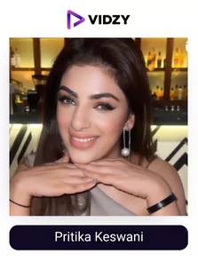
19. Pritika Keswani
Instagram Profile: makeupbypritika
USP:
Pritika has the ability to bring out your best features with her skills or knowledge.
Although Pritika Keswani is based in Connaught Place in the center of Delhi, she has operations in places like Chandigarh and Ashok Vihar. Young brides-to-be turn to Pritika, one of the top beauty Instagrammers in India, to get the perfect look for their wedding day. Professional makeup artist Pritika favors unforced beauty. She is renowned for using cutting-edge methods and cosmetics from well-known international brands to achieve her clients' ideal looks. Pritika has also introduced customized makeup brushes, eyelashes, and eyeliners for beauty enthusiasts under her cosmetic and personal care brand, "Lashablelashes."
With 226K followers, Pritika has a sizable following that attests to her abilities. The Instagram account of the beauty influencer is active, and she frequently provides her followers with makeup advice and tricks. The Indian beauty influencer's clients and projects are primarily featured in her content. She has an average reach of 56.7K and a 0.6% engagement rate. Her posts receive 1.3K likes and 18 comments on average, for a like-to-comment ratio of 134 to 1. Pritika prefers photos over other types of media, though she also uploads reels and longer videos. Average reel views are 15.9K; the top reel received 97.6K plays, 246 likes, and 25 comments.
-
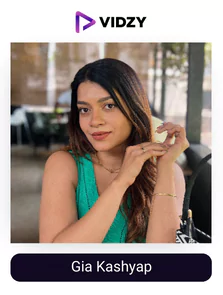
20. Gia Kashyap
Instagram Profile: Gia Kashyap
USP:
She is the go-to influencer for any beauty advice as she covers all the necessary topics consistently.
Gia Kashyap has been making fashion, lifestyle, or beautification easier for devotees of beauty all over the world making her one of the top beauty influencers in India. After pursuing careers as a graphic designer and content creator, Gia, one of the top Indian beauty influencers, discovered her calling. Colors, textures, and combinations—and what she could make from them—have always captivated her. Gia now manages the popular fashion blog Giasaysthat and has collaborated with some of the most recognizable brands in the world. Gia also advertises a variety of fashion accessories, such as jewelry and cosmetics.
Gia has 160K followers on her Instagram account, where she covers a wide range of topics. She offers advice on how to take care of your body, apply makeup, choose an outfit, style your hair, stay fit, and recommend products. Her posts are seen by 27.7K users on average. Gia publishes twice as many pictures as videos. The beauty influencers' video discussing sunscreens without white casts 107K views, 1500 likes, and 18 comments were received. With an average of 14 comments and 531 likes, Gia boasts an engagement rate of 0.3%. Gia has 1.2K subscribers on Myntra studio as well.
To Sum Up
Over 89% of marketers agree that ROI with video marketing is better than any other marketing method which is why each brand is running after video marketing campaigns through long and short video format. If you want to master it and gain positively every time, indulge with India's finest video production company - Vidzy, and have the top influencers in your niche promote your product.
So, what are you waiting for? Get in touch with them now!